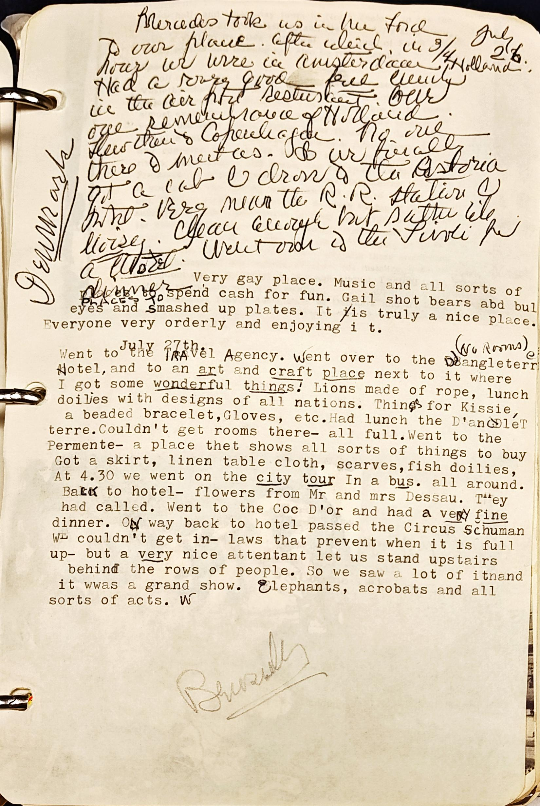

1
2
3
4
5
6
7
8
9
10
11
12
13 Very gay place. Music and all sorts of
14 PLACES to spend cash for fun. Gail shot bears abd bul
15 eyes and smashed up plates. It /is truly a nice place.
16 Everyone very orderly and enjoying i t.
17 July 27th.
18 Went to the TRAvel Agency. Went over to the Jangleterre (no rooms)
19 Hotel, and to an art craft place next to it where
20 I got some wonderful things! Lions made of rope, lunch
21 doilies with designs of all nations. Things for Kissie,
22 a beaded bracelet,Gloves, etc.Had luncg the D'andDleT
23 terre.Couldn't get rooms there- all full.Went to the
24 Permente- a place thet shows all sorts of things to buy
25 Got a skirt, linen table cloth, scarves,fish doilies,
26 At 4.30 we went on the city tour In a bus. all around.
27 Back to hotel- flowers from Mr and mrs Dessau. They
28 had called. Went to the Coc D'or and had a very fine
29 dinner. ON way back to hotel passed the Circus Schuman
30 WE couldn't get in- laws that prevent when it is full
31 up- but a very nice attentant let us stand upstairs
32 behind the rows of people. So we saw a lot of itnand
33 it wwas a grand show. Elephants, acrobats and all
34 sorts of acts. W
35